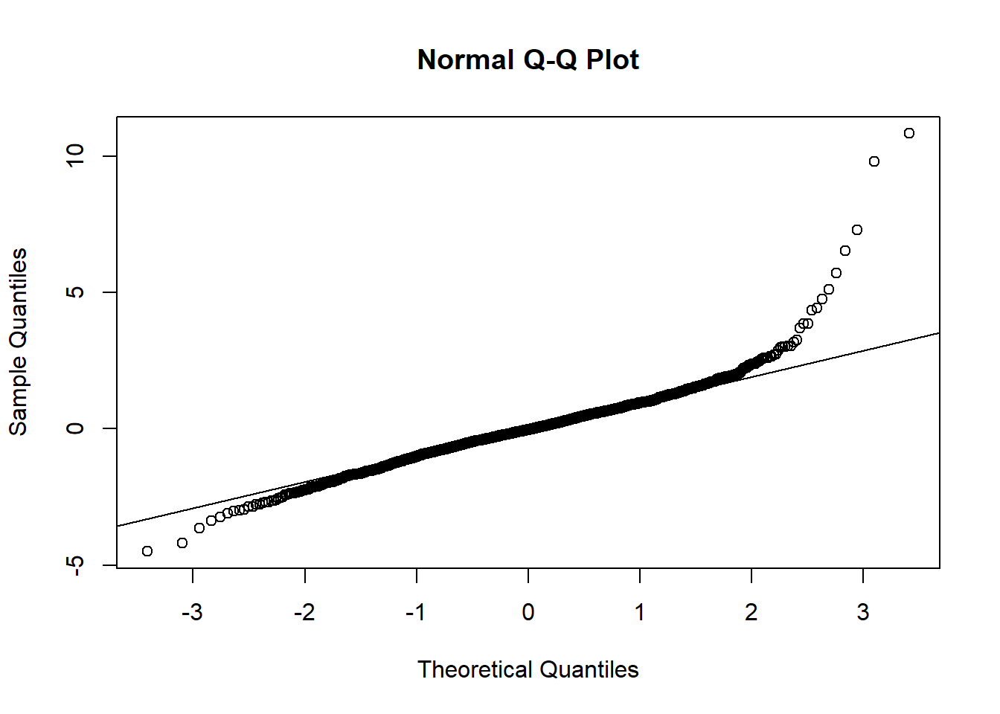

9 Model Fit Checks and Cross-Validation
This module expands on the methods discussed in earlier modules, detailing the model assumption checking methods, and different techniques for model selection. Additionally, this module covers cross-validation methods in more detail than in Module 4.
9.1 Model assumption checking
For this section, the data and model used follow on from Module 8, where the Cameroon data is explored and modelled. The resulting best model has covariates: \(x2, x16, x20, x24, x31, x36, x40\), which are used in the model fdens4. For more clarification, check the model set-up section of Module 8.
Once the chosen model is fitted, as mentioned in Module 4, it is important to check the validity of the model assumptions.
One method of doing this is to obtain the model residuals and plot a histogram of the residuals to test for normality. In the histogram below, there is evidence that the normality assumption is upheld with an approximate bell-curve shape to the histogram that is roughly symmetric.
#get the model residuals
model_residuals = fdens4$residuals
#plot the histogram of the residuals to test for the normality of the residuals
hist(model_residuals, col = "#004C92", breaks = 20,
main = "Histogram of model residuals", xlab = "Model residuals")
Alternatively, a quantile-quantile, or Q-Q, plot can be used to test for the normality of the residuals with the functions qqnorm() and qqline().
#plot the Q-Q plot of the residuals to test for the normality of the residuals
qqnorm(model_residuals)
#plot the Q-Q line
qqline(model_residuals)
The homoscedasticity assumption, or the constant variance assumption, can be checked by plotting the residuals with the basic plot() function, adding a horizontal line to the plot with the abline() function to aid in the interpretation of results.
#check for constant variance assumption (homoscedasticity)
plot(model_residuals)
abline(h = 0, col = 2, lwd = 3) 
It is important that this assumption is met, as if not, the resulting standard errors may be biased leading to unreliable inferences from the coefficients. If the assumption of homoscedasticity is not met (the case of heteroscedasticity, the variance is not constant), robust standard errors can be computed, or the dependent variable can be transformed using weighted least squares (WLS) regression. For information on these methods, see Andrew Heiss and R-bloggers.
To further demonstrate that this model is the preferred model, the generalised linear model with the selected significant covariates can be fitted against a nested (reduced) model. In the below code, a nested model is compared to the best model using the AIC where it can be seen that the AIC value for the model with the significant covariates found from the above workings is lower than for the nested model.
#fit the glm
fit1 <- glm(formula = y ~ x2 + x16 + x20 + x24, family = gaussian,
data = Data_CMR_std)
summary(fit1)##
## Call:
## glm(formula = y ~ x2 + x16 + x20 + x24, family = gaussian, data = Data_CMR_std)
##
## Coefficients:
## Estimate Std. Error t value Pr(>|t|)
## (Intercept) -4.55781 0.03114 -146.374 < 2e-16 ***
## x2 -0.34434 0.03250 -10.595 < 2e-16 ***
## x16 -0.30925 0.03218 -9.611 < 2e-16 ***
## x20 0.11053 0.03291 3.359 0.000801 ***
## x24 0.21823 0.03163 6.899 7.53e-12 ***
## ---
## Signif. codes: 0 '***' 0.001 '**' 0.01 '*' 0.05 '.' 0.1 ' ' 1
##
## (Dispersion parameter for gaussian family taken to be 1.540658)
##
## Null deviance: 2903.7 on 1588 degrees of freedom
## Residual deviance: 2440.4 on 1584 degrees of freedom
## (3 observations deleted due to missingness)
## AIC: 5203.2
##
## Number of Fisher Scoring iterations: 2#best model
fit2 <- glm(formula = y ~ x2 + x16 + x20 + x24 + x31 + x36 + x40,
family = gaussian, data = Data_CMR_std)
summary(fit2)##
## Call:
## glm(formula = y ~ x2 + x16 + x20 + x24 + x31 + x36 + x40, family = gaussian,
## data = Data_CMR_std)
##
## Coefficients:
## Estimate Std. Error t value Pr(>|t|)
## (Intercept) -4.55818 0.02961 -153.932 < 2e-16 ***
## x2 -0.25674 0.03343 -7.680 2.78e-14 ***
## x16 -0.14195 0.03342 -4.247 2.29e-05 ***
## x20 0.16773 0.03194 5.251 1.71e-07 ***
## x24 0.10987 0.03130 3.510 0.000461 ***
## x31 -0.02331 0.03233 -0.721 0.470987
## x36 -0.32647 0.03599 -9.070 < 2e-16 ***
## x40 0.18504 0.03901 4.743 2.29e-06 ***
## ---
## Signif. codes: 0 '***' 0.001 '**' 0.01 '*' 0.05 '.' 0.1 ' ' 1
##
## (Dispersion parameter for gaussian family taken to be 1.393316)
##
## Null deviance: 2903.7 on 1588 degrees of freedom
## Residual deviance: 2202.8 on 1581 degrees of freedom
## (3 observations deleted due to missingness)
## AIC: 5046.4
##
## Number of Fisher Scoring iterations: 29.2 Model selection
When selecting the best model (out of the competing models), it is important to select the model with the highest predictive ability.
Model selection is introduced in Module 4, where methods such as the AIC, BIC and LRT are used. For example, the AIC can be used with the generalised linear models fitted in the previous section as follows.
## [1] 5203.159## [1] 5046.416It can be seen that fit2 has a notably smaller AIC value and therefore, that is the model which should be selected.
However, these are not the only approaches that are available, with other methods more commonly used for Bayesian model selection.
9.2.1 Watanabe-Akaike Information Criterion (WAIC)
The WAIC (also known as the Widely Applicable information criterion) is a generalised version of the AIC that is commonly used for Bayesian model selection. This approach is often preferred when comparing Bayesian and complex models as instead of averaging over a point estimate (like the AIC and BIC), it averages over the posterior distribution, returning more robust and accurate results.
A value that can be used to compare the competing models is constructed through combining a penalty term derived from the estimated effective number of parameters with the expected log predictive densities for all the data points. When the data is not correlated, this method can be used as an alternative to cross-validation, and the method is only appropriate if there is no spatial or temporal auto-correlation. See Nature or Columbia for more information.
When fitting a model with the inla() function, the argument control.compute can be included with a list of variables you wish to compute and return with the model. This is demonstrated in Module 6, wherein the argument is specified as control.compute = list(waic = TRUE)).
This is seen in Module 6 with the following code.
#fit the chosen model and set WAIC to be computed
form_pop1a <- log(Total_Pop) ~ x2 + x16 + x20 + x24 + +x31 + x36 + x40
mod1 <- inla(form_pop1a,
data = data.frame(Data_CMR_std), # Data_CMR
family = "normal",
control.predictor = list(compute = TRUE),
control.compute = list(dic = TRUE, waic = TRUE, cpo = TRUE,
config = TRUE)
)To extract just the WAIC statistic from the model, either $waic[1] can be used after giving the model name, or the function summary() with the model of interest as the argument can be used to return the WAIC statistic alongside other potentially of interest information. Both of these options are given below. As with the standard AIC (and BIC), the WAIC is used for comparing nested models, where the model with the lower WAIC value is the better fitting model.
## $waic
## [1] 3078.578## Time used:
## Pre = 0.466, Running = 0.642, Post = 0.199, Total = 1.31
## Fixed effects:
## mean sd 0.025quant 0.5quant 0.975quant mode kld
## (Intercept) 6.815 0.016 6.784 6.815 6.847 6.815 0
## x2 0.009 0.018 -0.026 0.009 0.044 0.009 0
## x16 -0.083 0.018 -0.118 -0.083 -0.048 -0.083 0
## x20 0.022 0.017 -0.011 0.022 0.056 0.022 0
## x24 -0.002 0.017 -0.035 -0.002 0.031 -0.002 0
## x31 -0.144 0.017 -0.178 -0.144 -0.110 -0.144 0
## x36 -0.103 0.019 -0.141 -0.103 -0.065 -0.103 0
## x40 -0.017 0.021 -0.058 -0.017 0.024 -0.017 0
##
## Model hyperparameters:
## mean sd 0.025quant 0.5quant 0.975quant mode
## Precision for the Gaussian observations 2.49 0.089 2.32 2.49 2.67 2.49
##
## Deviance Information Criterion (DIC) ...............: 3074.66
## Deviance Information Criterion (DIC, saturated) ....: 1603.22
## Effective number of parameters .....................: 9.00
##
## Watanabe-Akaike information criterion (WAIC) ...: 3078.58
## Effective number of parameters .................: 12.70
##
## Marginal log-Likelihood: -1595.61
## CPO, PIT is computed
## Posterior summaries for the linear predictor and the fitted values are computed
## (Posterior marginals needs also 'control.compute=list(return.marginals.predictor=TRUE)')9.2.2 Deviance Information Criterion (DIC)
Similarly to the WAIC, the DIC is commonly used for comparison of Bayesian models for model selection. This criterion is a hierarchical modelling generalisation of the AIC and is particularly useful in cases where the Markov chain Monte Carlo (MCMC) methods have been used for obtaining the posterior distributions of the models. The main difference from the AIC is that instead of the maximised log-likelihood value used, the DIC uses the log-likelihood evaluated at the Bayes estimate of \(\hat{\theta}\). Additionally, the penalty term in the AIC is replaced with the estimated effective number of parameters.
As with the WAIC, the DIC can be computed within the inla() function by including the argument control.compute specified as control.compute = list(dic = TRUE)). This is also shown in Module 6 with the following code.
#fit the chosen model and set DIC to be computed
form_pop1a <- log(Total_Pop) ~ x2 + x16 + x20 + x24 + x31 + x36 + x40
mod1 <- inla(form_pop1a,
data = data.frame(Data_CMR_std),
family = "normal",
control.predictor = list(compute = TRUE),
control.compute = list(dic = TRUE, waic = TRUE, cpo = TRUE,
config = TRUE)
)The methods to extract the WAIC from the model are similar to those for extracting the DIC, for example, $dic[1] can be used following the model name or the summary() function with the model of interest as the argument. As an example, the former method is given below for the above model. Similarly to the WAIC statistic, DIC is used for comparing the fit of nested models and the model with the lowest DIC value is the better fitting model.
## $dic
## [1] 3074.664For more information and a manual implementation in R, see Dean Markwick.
9.2.3 Conditional predictive ordinate (CPO)
The conditional predictive ordinate is the leave-one-out cross-validation predictive density (also described as a cross-validatory criterion), conducting an observation-specific measure of the fit of the model. The CPO is computed for each observation, where when the model is fitted using all data but \(y_i\) (leave-one-out cross-validation), the CPO value is given as the posterior probability of observing that observation. The CPO allows for detection of unexpected or unusual observations, where whilst large CPO values correspond to the model fitting the observation well, a small CPO value indicates that the model fits that observation poorly, possibly indicating an outlier.
This approach requires some MCMC simulation to sample from the posterior simulation, however, this is the only simulation required unlike with other cross-validation and posterior-predictive approaches, making it a more computationally efficient and attractive approach to use.
As with both the WAIC and DIC, Module 6 provides an example of this being computed within the inla() function through using the argument control.compute = list(cpo = TRUE), where the example code is as follows.
#fit the chosen model and set CPO to be computed
form_pop1a <- log(Total_Pop) ~ x2 + x16 + x20 + x24 + x31 + x36 + x40
mod1 <- inla(form_pop1a,
data = data.frame(Data_CMR_std),
family = "normal",
control.predictor = list(compute = TRUE),
control.compute = list(dic = TRUE, waic = TRUE, cpo = TRUE,
config = TRUE)
)Similarly to the other model selection methods, the CPO can be extracted through using $cpo[1] or $cpo$cpo following the name of the chosen model.
To identify any potential outlier observations, the CPO values can be plotted, with each value numbered to the corresponding observation index number for ease of identification.
#set n to be the total number of observations
n <- nrow(Data_CMR)
#extract the CPO values
cpo_values <- mod1$cpo$cpo
#plot the CPO values
plot(1:n, cpo_values, ylab = "CPO", type = "n")
text(1:n, cpo_values, 1:n)
Given the large number of observations, the potential outlier observations cannot be easily detected from the resulting plot, to simplify this, the \(y\)-axis can be limited to only show the very small CPO values as follows.
#plot the CPO values
plot(1:n, cpo_values, ylab = "CPO", type = "n", ylim = c(0, 0.01))
text(1:n, cpo_values, 1:n)
The very small observations can then be extracted through selecting the ‘threshold’ for which values will be classified as outliers, and using the which() function to select the indices of each outlier value.
## [1] 142 225 228 231 234 260 268 319 368 412 438 713 744 745 756 757 808 865 890 940
## [21] 1147 1234 1252 1302 1314 1334 1399For more information on CPO, see Posterior Predictive Bayesian Phylogenetic Model Selection.
9.2.4 Probability Integral Transform (PIT)
The probability integral transform (or predictive integral transform, PIT) is another criterion that can be used for model selection. For each observation, the PIT measures the probability of a new response value being lower than the observed response value using a model that uses the rest of the data (also a leave-one-out approach). In the case where the model represents the observations well, the resulting (ordered) PIT values should approximately follow a uniform distribution.
The PIT is computed as part of the CPO within the inla() function, where it is confirmed whether or not the PIT is computed in the model in the sumamry() function, as seen below for the model given as an example in Module 6.
## Time used:
## Pre = 0.466, Running = 0.642, Post = 0.199, Total = 1.31
## Fixed effects:
## mean sd 0.025quant 0.5quant 0.975quant mode kld
## (Intercept) 6.815 0.016 6.784 6.815 6.847 6.815 0
## x2 0.009 0.018 -0.026 0.009 0.044 0.009 0
## x16 -0.083 0.018 -0.118 -0.083 -0.048 -0.083 0
## x20 0.022 0.017 -0.011 0.022 0.056 0.022 0
## x24 -0.002 0.017 -0.035 -0.002 0.031 -0.002 0
## x31 -0.144 0.017 -0.178 -0.144 -0.110 -0.144 0
## x36 -0.103 0.019 -0.141 -0.103 -0.065 -0.103 0
## x40 -0.017 0.021 -0.058 -0.017 0.024 -0.017 0
##
## Model hyperparameters:
## mean sd 0.025quant 0.5quant 0.975quant mode
## Precision for the Gaussian observations 2.49 0.089 2.32 2.49 2.67 2.49
##
## Deviance Information Criterion (DIC) ...............: 3074.66
## Deviance Information Criterion (DIC, saturated) ....: 1603.22
## Effective number of parameters .....................: 9.00
##
## Watanabe-Akaike information criterion (WAIC) ...: 3078.58
## Effective number of parameters .................: 12.70
##
## Marginal log-Likelihood: -1595.61
## CPO, PIT is computed
## Posterior summaries for the linear predictor and the fitted values are computed
## (Posterior marginals needs also 'control.compute=list(return.marginals.predictor=TRUE)')The PIT values can be extracted from the model through using $cpo[2] or $cpo$pit following from the name of the chosen model, demonstrated in the below code, where the PIT values are plotted to test the fit of the model.
#extract PIT values
pit_values <- mod1$cpo$pit
#compute uniform quantiles
uniform_quant <- (1:n)/(n+1)
#plot the PIT values
plot(uniform_quant, sort(pit_values), xlab = "Uniform quantiles",
ylab = "Ordered PIT values")
abline(0,1)
It can be seen that the model fits the data reasonably well, given that the resulting plot of the PIT values is approximately uniformly distributed with no obvious outlier values.
For more information, see Bayesian inference with INLA.
9.3 Cross-validation
An introduction to cross-validation methods is given in Module 4, where a frequentist approach is taken. This section will cover basic cross-validation methods, in addition to the k-fold and leave-one-out cross-validation methods previously covered, however, with the application being to geospatial data (the Cameroon dataset following on from Module 8), INLA models and a Bayesian approach.
9.3.1 Basic cross-validation
To begin with the basic cross-validation process, the data first needs to be randomly split into two, a training set and a test set. In this case, the training dataset contains 80% of the data and the test set contains the remaining 20% of the data.
#set the seed for reproducibility
set.seed(100)
#find how large 80% of the data is
n_train <- ceiling(0.8 * nrow(Data_CMR_std))
#sample the indices for the training data
train_sample <- sample(c(1:nrow(Data_CMR_std)), n_train)
#sample the training data
train_data <- Data_CMR_std[train_sample, ]
#sample the test data
test_data <- Data_CMR_std[-train_sample, ]Once the data has been split, the preferred model from above can be fitted on the training data (to ‘train’ the model). This can be done with the glm() as above.
#fit the training model
train_model <- glm(formula = y ~ x2 + x16 + x20 + x24 + x31 + x36 + x40,
family = gaussian, data = train_data)As discussed in Module 4, predicted values can be computed using two methods. The simplest way is to use the predict() function, including the training model and test dataset as arguments. Alternatively, the prediction can be done manually through finding the coefficients for the best model and then manually multiplying the model coefficients to the corresponding covariates from the test data. To demonstrate that both methods produce the comparable results, a data frame can be created to compare the predicted values from each method side-by-side.
#predictions with function
pred_w_func <- predict(train_model, test_data)
#predictions manually
coeffs <- coefficients(train_model)
pred_manual <- coeffs[1] + coeffs[2]*test_data$x2 + coeffs[3]*test_data$x16 +
coeffs[4]*test_data$x20 + coeffs[5]*test_data$x24 + coeffs[6]*test_data$x31 +
coeffs[7]*test_data$x36 + coeffs[8]*test_data$x40
#compare the predictions found using the two methods
compare_preds <- data.frame(Manual = pred_manual,
Automatic = pred_w_func)
head(compare_preds)## Manual Automatic
## 7 -4.841221 -4.841221
## 10 -5.499207 -5.499207
## 14 -4.207881 -4.207881
## 22 -5.169066 -5.169066
## 25 -5.034028 -5.034028
## 33 -4.560108 -4.560108To further compare the results, a scatter plot and a box plot can be produced.
#put the plots side-by-side
par(mfrow = c(1,2))
#scatter plot
plot(pred_manual, pred_w_func,
col = c("blue", "red"),
xlab = "Manual", ylab = "Automatic")
#box plot
boxplot(pred_manual, pred_w_func,
col = c("blue", "red"))
Model fit metrics such as Mean Absolute Error (MAE), Root Mean Square Error (RMSE), bias and correlation can all be computed to help understand how well the chosen model works. To make it simpler to compare the different metrics, the below function created computes each of the aforementioned metrics through including the observed values and the predicted values as arguments.
#create model metrics function
mod_metrics <- function(obs, pred){
residual = pred - obs
MAE = mean(abs(residual), na.rm = TRUE) #Mean Absolute Error
MSE = mean(residual^2, na.rm = TRUE) #Mean Square Error
RMSE = sqrt(MSE) #Root Mean Square Error
BIAS = mean(residual, na.rm = TRUE) #Bias
CORR = cor(obs[!is.na(obs)], pred[!is.na(obs)]) #Correlation
output <- list(MAE = MAE ,
RMSE = RMSE,
BIAS = abs(BIAS),
CORR = CORR)
return(output)
}To begin with, the log-density can be included as the observed values with the manually predicted values from the chosen model also included as an argument.
#compute the model metrics
metrics <- mod_metrics(test_data$LDensity, pred_manual)
#remove the list structure and round the results to 4 d.p.
met <- round(unlist(metrics), 4)
met ## MAE RMSE BIAS CORR
## 0.8507 1.1276 0.0938 0.5317The metrics results indicate the model works well. For example, the range of MAE is from 0 to \(\infty\), where a score of 0 would indicate that the resulting predictions are perfect, therefore a low value of 1.0116 is good. Similarly, the rest of the metrics are also small, particularly the bias and correlation, two values that you want to be as small as possible for a better fitting model.
Repeated cross-validation can be used to better assess the model metrics through obtaining average values for the metrics. This is done in the code below where the start values are set to be 0, following the same process as before through randomly splitting the data, modelling the training data and predicting with the test data followed by computing the metrics. The mean value can then be computed for each of the metrics and compared to the results obtained above for when the process is only completed once. The results from the repeated CV support the prior conclusions that the model chosen works well in the case of this data.
#run the cross validation multiple number of times and average the values
MAE <- 0
RMSE <- 0
BIAS <- 0
CORR <- 0
#choosing here to run the validation 20 times
for(i in 1:20){
#select the number of training samples to take to be 80% of the observations
n_train <- ceiling(0.8 * nrow(Data_CMR_std))
#sample the the indices for the training data
train_sample <- sample(c(1:nrow(Data_CMR_std)), n_train)
#create the training dataset
train_data <- Data_CMR_std[train_sample, ]
#create the test dataset to contain the remaining observations (20%)
test_data <- Data_CMR_std[-train_sample, ]
#fit the training model using the previously selected covariates
train_model <- glm(formula = y ~ x2 + x16 + x20 + x24 + x31 + x36 + x40,
family = gaussian, data = train_data)
#save the coefficients from the training model
coeffs <- coefficients(train_model)
#manually predict using the model coefficients
pred_manual <- coeffs[1] + coeffs[2]*test_data$x2 + coeffs[3]*test_data$x16 +
coeffs[4]*test_data$x20 + coeffs[5]*test_data$x24 +
coeffs[6]*test_data$x31 + coeffs[7]*test_data$x36 + coeffs[8]*test_data$x40
#obtain the metrics for the model using the model metrics function
metrics <- round(unlist(mod_metrics(test_data$LDensity, pred_manual)),4)
#extract each of the metrics for the model and sum to result from
#previous iteration to find mean metric value later
MAE <- MAE + metrics[1]
RMSE <- RMSE + metrics[2]
MAE <- MAE + metrics[3]
CORR <- CORR + metrics[4]
}
#create a data frame for the model metrics, averaged across the 20 iterations
av_metrics <- data.frame(MAE = MAE/20,
RMSE = RMSE/20,
BIAS = BIAS/20,
CORR = CORR/20)
#print the result
(met_all <- rbind(met, av_metrics)) #include in brackets to print result## MAE RMSE BIAS CORR
## 1 0.850700 1.127600 0.0938 0.53170
## MAE 0.909175 1.206045 0.0000 0.482179.3.2 K-Fold Cross-Validation
K-fold cross-validation is a common choice of method for cross-validation for multiple reasons. Firstly, it is particularly useful in the case where the number of samples available is small given that this approach does not waste much data. Additionally, in comparison to alternative cross-validation approaches, k-fold cross-validation often results in models with less bias as it ensures that each data point is used for both training and validation. Therefore, this approach ensures that each of the observations from the original dataset are able to appear in both the training and test datasets. In this section, to demonstrate the process of k-fold cross-validation, both in-sample (data from the sample is used to develop the model that is used for the predictions) and out-of-sample (data that wasn’t used in the development of the model is used for the predictions), a function is created which allows for an automated process of the cross-validation.
Firstly, a function to compute the model metrics must be created, this takes the observed and predicted values and computes the mean absolute error, mean square error, root mean square error, bias and the correlation coefficient. This function will aid in streamlining the cross-validation function.
#create model metrics function
model_metrics <- function(obs, pred){
residual = pred - obs
MAE = mean(abs(residual), na.rm = TRUE) #Mean Absolute Error
MSE = mean(residual^2, na.rm = TRUE) #Mean Square Error
RMSE = sqrt(MSE) #Root Mean Square Error
BIAS = mean(residual, na.rm = TRUE) #Bias
CORR = cor(obs[!is.na(obs)], pred[!is.na(obs)]) #Correlation Coefficient
output <- list(MAE = MAE,
RMSE = RMSE,
BIAS = abs(BIAS),
CC = CORR)
return(output)
}Then, the function for the k-fold cross-validation can be created. For alternative datasets, the selected covariates should be changed to suit your data.
The arguments needed for the function are as follows.
dat: the input survey data containing all the variablesn.folds: the number of test (k) folds to usemod: the best model of the full or reference dataA: the projection matrix used in training the full data modelcov: the fixed covariates from the selected modelcov2: additional covariates to use in the out-of-sample training stackseed: a random sample seed used to make the results reproducible
cross_validate <- function(dat, n.folds, mod, form, A, cov, cov2, seed){
#set the seed for reproducibility
set.seed(seed)
#number of rows in the dataset
N <- nrow(dat)
#sample IDs for the training data
table(ind_train <- factor(sample(x = rep(1:n.folds,
each = floor(N / n.folds)),
size = N)))
#create a table for the training IDs
table(as.numeric(ind_train))
dat$k_fold <- as.numeric(ind_train)
#vector for the longitude and latitude coordinates
coords <- cbind(dat$lon, dat$lat)
#sort the unique folds
k_uniq <-sort(unique(dat$k_fold))
#--------------------------------------------------------------------------#
# In-Sample #
#--------------------------------------------------------------------------#
#create variables for the metrics and predictions
met_list_in <- list()
pred_list_in <- list()
for(i in 1:length(k_uniq)){ #cycle through each of the unique folds
#keep track the current fold
print(paste0("in-sample cross-validation using fold ", i, sep = ""))
#select the test data for fold i
test_ind <- which(dat$k_fold == k_uniq[i])
dim(test <- dat[test_ind, ])
#train and test data coordinates
train_coords <- coords
test_coords <- coords[test_ind,]
#spatial random effects based on the full data best model
sfield_nodes_mean <- mod$summary.random$spatial.field['mean']
field_mean <- (A%*% as.data.frame(sfield_nodes_mean)[, 1])
#list of selected covariates
fixed <- mod$summary.fixed['Intercept', 'mean'] #fixed effects
for(covariate in cov){
fixed <- fixed + mod$summary.fixed[paste0(covariate), 'mean'] *
test[,paste0(covariate)]
}
#add settlement type and region nested effects
fixed = fixed + rnorm(nrow(test), 0, 1/mod$summary.hyperpar$mean[2]) +
#add settlement type random effect
rnorm(nrow(test), 0, 1/mod$summary.hyperpar$mean[5]) +
#add uncorrelated spatial random effects
mod$summary.random$IDsr['mean'][test_ind,1] + field_mean[test_ind,1]
dens_ht <- exp(fixed)
sum(pop_ht <- dens_ht*test$bld)
#scatter plots for each fold, uncomment for plots to show
# par(mfrow = c(1,1))
# plot(test$obs, pop_ht, xlab = "Observed",
# ylab = "Predicted", col = c('blue','orange'),
# pch = c(16,16), cex.axis = 1.5)
# abline(0,1)
# legend("topleft", c("Observed", "Predicted"), col = c("blue", "orange"),
# pch = c(16,16), bty = "n", cex = 1.5)
#calculate fit metrics
met_in <- model_metrics(test$pop, pop_ht)
met_list_in[[i]]<- unlist(met_in)
pred_list_in[[i]] <- data.frame(obs = test$obs, pred = pop_ht,
fold = rep(i, length(test$obs)),
data = rep("insample", length(test$obs)))
}
met_list_in_dat <- do.call(rbind,met_list_in)
#fit metrics
metrics_in <- apply(met_list_in_dat, 2, mean)
#predictions
pred_list_in_dat <- do.call(rbind,pred_list_in)
#--------------------------------------------------------------------------#
# Out-of-Sample #
#--------------------------------------------------------------------------#
#create variables for the model metrics and predictions
met_list_out <- list()
pred_list_out <- list()
for(i in 1:length(k_uniq)){#cycle through each of the unique folds
#keep track of current fold
print(paste0("out-of-sample cross-validation using fold ", i, sep = ""))
#select the train and test data for fold i
train_ind <- which(dat$k_fold != k_uniq[i])
test_ind <- which(dat$k_fold == k_uniq[i])
dim(train <- dat[train_ind, ])
dim(test <- dat[test_ind, ])
#train and test data coordinates
train_coords <- coords[train_ind,]
test_coords <- coords[test_ind,]
#create a projection matrix for training data
Ae<-inla.spde.make.A(mesh = mesh,loc = as.matrix(train_coords)); dim(Ae)
covars_train <- train[,c(cov, cov2)]
stk_train <- inla.stack(data = list(y = train$dens), #the response
A = list(Ae,1), #the A matrix
effects = list(c(list(Intercept = 1), #the Intercept
iset), #the spatial index
list(covars_train)), #the covariates
tag = 'train')
model <-inla(form, #the formula
data = inla.stack.data(stk_train,spde = spde),
family = 'gamma',
control.predictor = list(A = inla.stack.A(stk_train),
compute = TRUE),
control.compute = list(dic = TRUE, waic = TRUE, cpo = TRUE,
config = TRUE),
verbose = FALSE)
summary(model)
#extract spatial random effects from the full data best model
sfield_nodes_mean <- mod$summary.random$spatial.field['mean']
field_mean <- (A%*% as.data.frame(sfield_nodes_mean)[, 1])
fixed <- model$summary.fixed['Intercept', 'mean'] #fixed effects
for(covariate in cov){
fixed <- fixed + model$summary.fixed[paste0(covariate), 'mean'] *
test[,paste0(covariate)]
}
#add settlement type and region nested effects
fixed = fixed + rnorm(nrow(test), 0, 1/model$summary.hyperpar$mean[2]) +
#add settlement type random effect
rnorm(nrow(test), 0, 1/model$summary.hyperpar$mean[5]) +
#add uncorrelated spatial random effects
mod$summary.random$IDsr['mean'][test_ind,1] + field_mean[test_ind,1]
dens_ht <- exp(fixed)
sum(pop_ht <- dens_ht*test$bld)
#scatter plots for each fold, uncomment for plots to show
# par(mfrow = c(1,1))
# plot(test$obs, pop_ht, xlab = "Observed",
# ylab = "Predicted", col = c('blue','orange'),
# pch = c(16,16), cex.axis = 1.5)
# abline(0,1)
# legend("topleft", c("Observed", "Predicted"), col = c("blue", "orange"),
# pch = c(16,16), bty = "n", cex = 1.5)
#calculate fit metrics
met_out <- model_metrics(test$pop, pop_ht)
met_list_out[[i]]<- unlist(met_out)
pred_list_out[[i]] <- data.frame(obs = test$obs, pred = pop_ht,
fold = rep(i, length(test$obs)),
data = rep("outsample", length(test$obs)))
}
met_list_out_dat <- do.call(rbind,met_list_out)
#fit metrics
metrics_out <- apply(met_list_out_dat, 2, mean)
#predictions
pred_list_out_dat <- do.call(rbind,pred_list_out)
cv_mets <- rbind(metrics_in, metrics_out)
output <- list( met_list_in_dat = met_list_in_dat,
met_list_out_dat = met_list_out_dat,
pred_dat = rbind(pred_list_in_dat, pred_list_out_dat),
cv_metrics = rbind(metrics_in, metrics_out))
}To apply this function, the data from Cameroon is used as an example. In this example, the dataset is called dat, the number of folds utilised is 5, the chosen model is called mod4 with corresponding formula in the INLA model form4, projection matrix A and seed number 13235 (for reproducibility). Additionally, the vectors containing the selected covariate information, cov and cov2, are defined prior to running the function.
#results from k-fold cross validation
cov <- c('x2', 'x3', 'x17', 'x21', 'x32', 'x34', 'x40', 'x42')
cov2 <- c("set_reg", "set_typ", "region", "IDsr")
cross_val <- cross_validate(dat = dat,
n.folds = 5,
mod = mod4,
form = form4,
A = A,
cov = cov,
cov2 = cov2,
seed = 13235)## [1] "in-sample cross-validation using fold 1"
## [1] "in-sample cross-validation using fold 2"
## [1] "in-sample cross-validation using fold 3"
## [1] "in-sample cross-validation using fold 4"
## [1] "in-sample cross-validation using fold 5"
## [1] "out-of-sample cross-validation using fold 1"
## [1] "out-of-sample cross-validation using fold 2"
## [1] "out-of-sample cross-validation using fold 3"
## [1] "out-of-sample cross-validation using fold 4"
## [1] "out-of-sample cross-validation using fold 5"## MAE RMSE BIAS CC
## [1,] 154.0561 327.7893 95.22379 0.9902840
## [2,] 139.0922 196.5983 82.62810 0.9887830
## [3,] 141.9625 224.6575 74.04167 0.9801556
## [4,] 142.4847 211.9439 79.10194 0.9781099
## [5,] 141.4359 223.6698 74.50207 0.9864906## MAE RMSE BIAS CC
## [1,] 160.7173 339.8842 61.73926 0.9836105
## [2,] 141.5075 198.4901 69.18201 0.9874822
## [3,] 177.8058 302.0186 119.58316 0.9721151
## [4,] 169.6710 268.6756 140.74931 0.9750293
## [5,] 132.1042 193.2967 59.91717 0.9854916## MAE RMSE BIAS CC
## metrics_in 143.8063 236.9318 81.09951 0.9847646
## metrics_out 156.3612 260.4731 90.23418 0.9807457## obs pred fold data
## 1 1886 1685.1565 1 insample
## 2 908 978.4384 1 insample
## 3 545 631.0405 1 insample
## 4 768 862.1703 1 insample
## 5 915 976.8425 1 insample
## 6 912 1074.9687 1 insample## obs pred fold data
## 4575 1291 1026.8244 5 outsample
## 4576 1028 849.8356 5 outsample
## 4577 283 228.0998 5 outsample
## 4578 346 329.3237 5 outsample
## 4579 691 720.8671 5 outsample
## 4580 373 399.1697 5 outsample9.3.3 Useful resources
- WAIC: Nature
- WAIC: Columbia
- DIC: Dean Marwick
- CPO: Posterior Predictive Bayesian Phulogenetic Model Selection
- PIT: Bayesian inference with INLA
- INLA-SPDE approach: datascience+